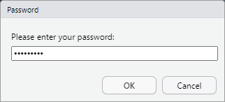
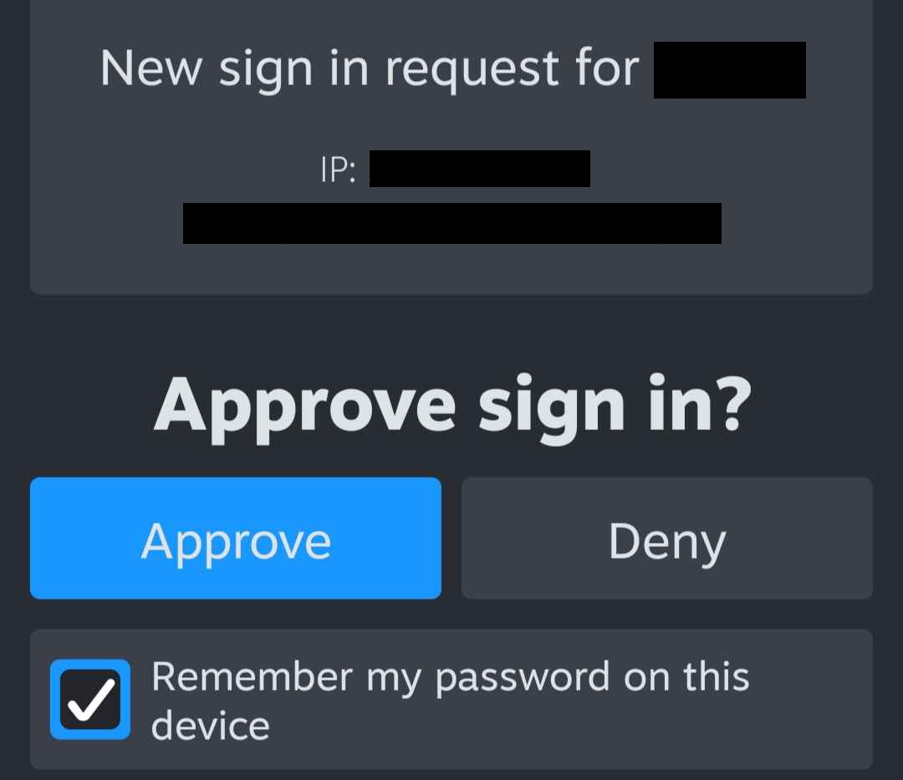

API keys and authentication
auth-session.Rmd
library(steamr)The Steam API is very inconsistent in the way it provides access to
its services. Some functions do not need any identification, others
require a Steam API key, and the most sensitive ones require you to be
logged in. It is not always obvious which functions require which type
of authentication, but steamr functions perform initial
checks to ensure that authentication is given:
get_userdata()
#> Error: Session is not authenticated. You can login using the auth_credentials or auth_qr functions.This vignette covers two package features: API keys and user authentication.
API key
A Steam API key can be requested by any Steam account that has spent at least 5 USD in the Steam store. The account also needs to use two-factor authentication using the Steam mobile app. An API key can then be requested on Steam’s developer site: [https://steamcommunity.com/dev/apikey]. You need to be logged in to request an API key.

After a successful request, an API key will be generated. You can view the API key anytime you visit Steam’s dev site.

For use in steamr, set your API key as the environment
variable STEAM_API_KEY. Requests sent to the Steam API will
automatically fill in the key parameter.
# Sys.setenv(STEAM_API_KEY = "XXXX")
get_steam_level("76561197960435530")
#> [1] 31You can suppress this behavior by setting
options(steamr_do_auth = FALSE).
options(steamr_do_auth = TRUE)
get_steam_level("76561197960435530")
#> [1] 31User authentication
User authentication is a bit more spicy. In more technical terms,
authenticating a session means sending an access token with each request
and setting the sessionid, steamLoginSecure,
steamCountry, and steamRefresh_steam cookies.
steamr achieves this through the functions
auth_credentials and auth_qr. To login using
either function, the Steam mobile app is required.
Authentication using credentials
auth_credentials performs authentication by asking for
username and password. The password argument accepts a
function that safely asks for a password. This can be functions such as
askpass::askpass or rstudioapi::askForPassword
or any other prompt function that obfuscates the password string. The
password is then RSA-encrypted using a Steam public key to ensure a
secure transfer.

If the prompted password is correct, an authenticated session is
initialized. Steam will now perform two-factor authentication using the
Steam mobile app. You will receive a notification on your mobile device
asking you to confirm the login request. Upon approval,
auth_credentials will finalize the login and set the
necessary cookies. As an alternative to manually approving each login
request, you can also pass a Steam guard code using the
shared_secret argument.

Authentication using QR codes
Although auth_credentials takes great care of encrypting
and obfuscating passwords wherever possible, passwords are still passed
through the R session. To avoid entering passwords altogether,
auth_qr can be used. This function requests a Steam login
link and parses it as a QR code. This is essentially the same method
that is used on Steam’s login page ([https://store.steampowered.com/login/]).
The QR code is generated using the qrcode package and
rendered as an R plot. This QR code can be scanned using the Steam
mobile app to authenticate the session.
While this method avoids password prompts entirely, it depends on the ability to render and scan R plots interactively. At the end of the day, both functions require an interactive session and active user feedback.
Persistent sessions
By default, authenticated sessions are ephemeral, they expire quickly
and do not survive a session restart. They are stored in a temporary
file and die when the R session ends. To persistently save a session for
an undetermined time, you can use the persistent argument
to auth_credentials. A persistent session takes longer to
expire and is stored in a persistent directory. It uses
rappdirs::user_cache_dir() to store authentication details
and session cookies and is re-initialized when the package is loaded.
Nonetheless, even persistent sessions expire at some point. To manually
kill a stale session, you can use logout(). This deletes
all information R has on the current authenticated session.